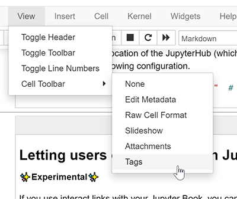

How-to and FAQ¶
This page contains more advanced and complete information about the
jupyter-book repository. See the sections below.
Enable Google Analytics¶
If you have a Google Account, you can use Google Analytics to collect some information on the traffic to your Jupyter Book. With this tool, you can find out how many people are using your book, where they come from and how they access it, wether they are using the Desktop or the mobile version etc.
To add Google Analytics to your Jupyter Book, navigate to Google Analytics, create a new Google Analytics account and add the url of your Jupyter Book to a new property. Once you have set everything up, your Google Analytics property will have a so-called Tracking-ID, that typically starts with the letters UA. All that you need to do is to copy this ID and paste it into your configuration file:
html:
google_analytics_id: UA-XXXXXXXXX-X
Check external links in your book¶
If you’d like to make sure that the links outside of your book are valid, run the Sphinx link checker with Jupyter Book. This will check each of your external links and ensure that it resolves.
To run the link checker, use the following command:
jupyter-book build mybookname/ --builder linkcheck
It will print the status of each link in your book so that you may resolve any incorrect links later on.
Clean your book’s generated files¶
It is possible to “clean up” the files that you generate when you build your book. This is often useful if you have recently changed a lot of content in order to ensure that you build your book from a clean slate.
You can clean up your book’s generated content by running the following command:
jupyter-book clean mybookname/
By default, this will delete all folders inside mybookname/_build except
for a folder called .jupyter_cache. This ensures that the content of your book
will be regenerated, while the cache that is generated by running your book’s code
will not be deleted (because regenerating it may take some time).
To delete the .jupyter_cache folder as well, add the --all flag like so:
jupyter-book clean mybookname/ --all
This will entirely remove the folders in the _build/ directory.
How should I add cell tags to my notebooks?¶
You can control the behavior of Jupyter Book by putting custom tags in the metadata of your cells. This allows you to do things like automatically hide code cells) as well as adding interactive widgets to cells.
There are two straightforward ways to add metadata to cells:
Use the Jupyter Notebook cell tag editor. The Jupyter Notebook ships with a cell tag editor by default. This lets you add cell tags to each cell quickly.
To enable the cell tag editor, go click
View -> Cell Toolbar -> Tags. This will enable the tags UI. Here’s what the menu looks like.
Use the JupyterLab Cell Tags plugin. JupyterLab is an IDE-like Jupyter environment that runs in your browser. It has a “cell tags” plugin built-in, which exposes a user interface that lets you quickly insert cell tags.
You’ll find tags under the “wrench” menu section. Here’s what the tags UI in JupyterLab looks like.

Add tags to notebook cells based on their content¶
Sometimes you’d like to quickly scan through a notebook’s cells in order to
add tags based on the content of the cell. For example, you might want to
hide any cell with an import statement in it using the remove-input tag.
Here’s a short Python snippet to accomplish something close to this. First change directories into the root of your book folder, and then run the script below as a Python script or within a Jupyter Notebook (modifying as necessary for your use case). Finally, check the changes that will be made and commit them to your repository.
import nbformat as nbf
from glob import glob
# Collect a list of all notebooks in the content folder
notebooks = glob("./content/**/*.ipynb", recursive=True)
# Text to look for in adding tags
text_search_dict = {
"# HIDDEN": "remove-cell", # Remove the whole cell
"# NO CODE": "remove-input", # Remove only the input
"# HIDE CODE": "hide-input" # Hide the input w/ a button to show
}
# Search through each notebook and look for th text, add a tag if necessary
for ipath in notebooks:
ntbk = nbf.read(ipath, nbf.NO_CONVERT)
for cell in ntbk.cells:
cell_tags = cell.get('metadata', {}).get('tags', [])
for key, val in text_search_dict.items():
if key in cell['source']:
if val not in cell_tags:
cell_tags.append(val)
if len(cell_tags) > 0:
cell['metadata']['tags'] = cell_tags
nbf.write(ntbk, ipath)
Use raw html in Markdown¶
Jupyter notebook markdown allows you to use pure HTML in markdown cells. This is strongly discouraged and not guaranteed to work in all cases.
If, for instance, you use
<img src="images/some/file.png" alt="Some image" style="width: 200px;"/>
in your Markdown texts, the source file images/some/file.png will not
be copied to the build directory when you run jupyter-book build.
You would have to copy the source file to the
build directory manually. Note that MyST markdown gives you control over the
image appearance without having to resort
to pure html.
Adding extra HTML to your book¶
There are a few places in Jupyter Book where you can add arbitrary extra HTML.
In all cases, this is done with a configuration value in your _config.yml file.
Working on Windows¶
As of June 5, 2020, there are three open issues that require Windows-specific changes. Work to complete windows compatibility is underway, in the meantime we provide these community tips, which are known to work for some users. Note that there is no guarantee that they will work on all windows installations.
Character encoding
Jupyter-book currently reads and writes files on windows in the native windows encoding, which causes encoding errors for some characters in UTF-8 encoded notebooks.
Work-around: Beginning with Python 3.7 cmd.exe or powershell enviroments that set PYTHONUTF8=1 override the native locale encoding and use UTF8 for all input/output.
Tip
To make it easier to use this option, the EOAS/UBC notebook courseware project has created a conda package runjb which does this automatically for powershell
A new windows event loop
The asyncio event loop has been changed for Python 3.8 causing sphinx-build to fail.
Work-around: Pin to Python 3.7.6. This environment_win.yml file does that, and also installs runjb to fix issue 1.
Nested tables of contents
Currently,
_toc.ymlfiles that reference markdown files in subfolders are failing for some windows users. That is, this original _toc.yml file will fail with a message saying jupyter-book “cannot find index.md”Work-around: Flatten the layout of the book to a single level, i.e. this _toc.yml file works with windows.
Summary
The following workflow should succeed using a miniconda powershell terminal on Windows 10:
conda install gitgit clone https://github.com/eoas-ubc/quantecon-mini-example.gitcd quantecon-mini-examplegit checkout windowsconda env create -f environment_win.ymlconda activate wintestcd mini_bookrunjb docs
After the build, view the html with:
start docs\_build\html\index.html
What if I have an issue or question?¶
If you’ve got questions, concerns, or suggestions, please open an issue at at the jupyter book issues page